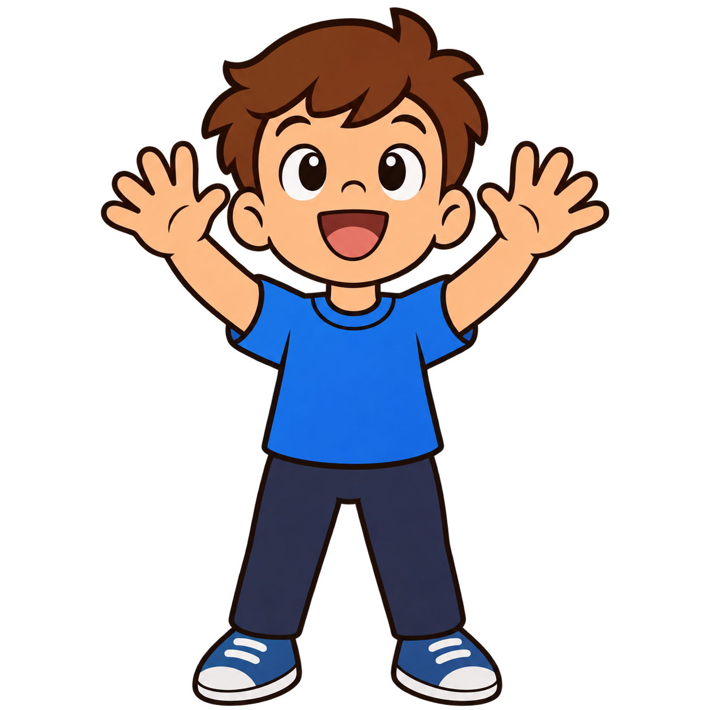
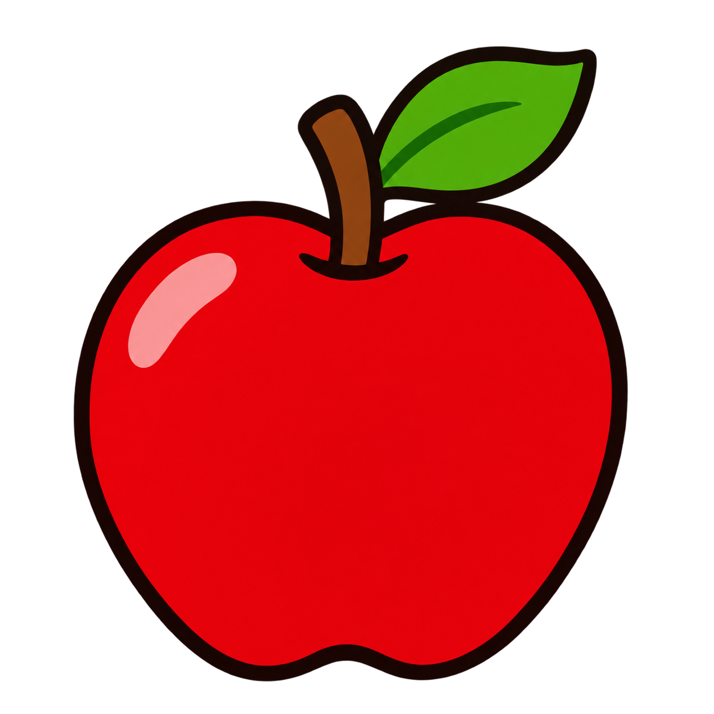

Drž šipku pod hřištěm nebo klávesu A pro pohyb doleva a D pro pohyb doprava. Za každé chycené jablíčko získáš bod. Klávesou Enter začneš novou hru.
Skóre: 0 | Jablíčka celkem: 1


Červivé jablíčko tě zasáhlo. Konec hry!
Začneš s jedním zdravým jablíčkem. Chyť ho a budou padat dvě. Chyť další dvě a budou tři, pak čtyři… Nejvýše jich padá sedm.
Minuté jablíčko zhnědne a odráží se od hran. Pozor: když tě zasáhne, hra končí! Červené jablíčko při srážce s hnědým zmizí. Hnědé zmizí až po třech červených. Při srážce dvou hnědých zmizí obě.
Červivá jablíčka jsou navíc. Zdravá se průběžně doplňují.